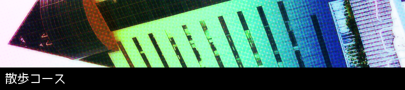

当コースで行くスポット
- 青森駅
- 八甲田丸周辺
- A-FACTORY
- 青森ラブリッジ
- 青い海公園
- 聖徳公園
- 青森港新中央埠頭
- 浜町桟橋跡地
- 青森製氷
- 青森市公会堂跡地
- 旭橋
- スマイル＆スプーンキッチンスタジオ
- おもたか跡地
- 太宰治下宿跡地
スポット名をクリックすると、コース詳細ページへ飛びます。
太宰治が、旧制・青森中学校への行き帰りによく佇んで物思いをした橋や、
1927(昭和2)年、芥川龍之介の講演を聴いて感動した場所にも向かいます。
健康に良い、バランスの取れたお食事ができるお店へも。
所要時間・約2時間(食事時間は含みません)/距離・約3km
所要時間・約2時間(食事時間は含みません)/距離・約3km